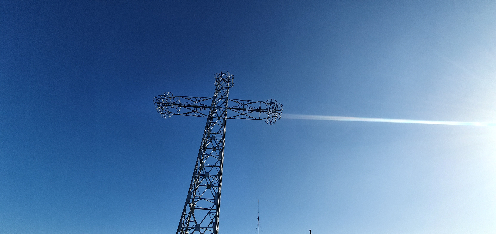
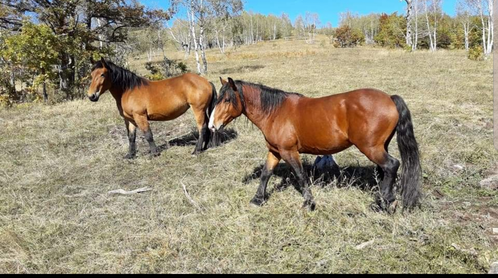
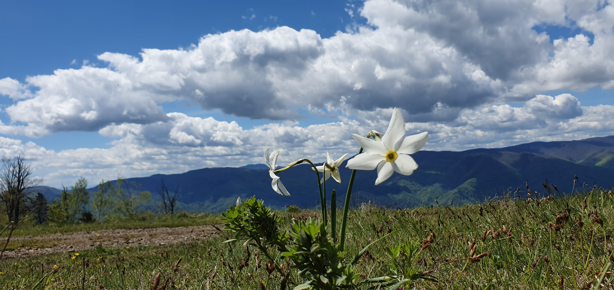

Planina Stolovi kod Kraljeva
Planina Stolovi nalazi se u centralnom delu Srbije, u neposrednoj blizini grada Kraljeva. Poznata je po prostranim pašnjacima, blagim visoravnima i poludivljim konjima koji slobodno žive na njenim obroncima.
📍 Položaj i prirodne karakteristike
Stolovi se uzdižu iznad doline Ibra i predstavljaju prirodnu granicu između Žiče, Trešnjara i viših planinskih predela. Najviši vrh planine je Kamarište (Usovica) sa oko 1375 metara nadmorske visine.

🐎 Poludivlji konji na Stolovima
Jedan od simbola planine Stolovi su poludivlji konji koji već decenijama žive na otvorenim pašnjacima. Njihova sloboda, kretanje u krdima i prilagođenost prirodi čine Stolove jedinstvenim mestom u Srbiji.

🌼 Manifestacija „Narcisu u pohode“
Više od šest decenija, svake godine u proleće, na planini Stolovi održava se tradicionalna manifestacija „Narcisu u pohode“, u organizaciji Planinarskog društva „Gvozdac“ iz Kraljeva.
Tokom ovog perioda Stolovi postaju prekriveni poljima divljih narcisa, privlačeći planinare, ljubitelje prirode i fotografe.

⛪ Okolina i istorijska povezanost
U neposrednoj blizini planine nalaze se značajna istorijska i duhovna mesta, među kojima se posebno izdvaja manastir Žiča, kao i sela u podnožju planine, uključujući Trešnjar.
👉 Pročitajte digitalnu monografiju sela Trešnjar
✍️ Autor
Tekst i fotografije: Zoran Tatomirović